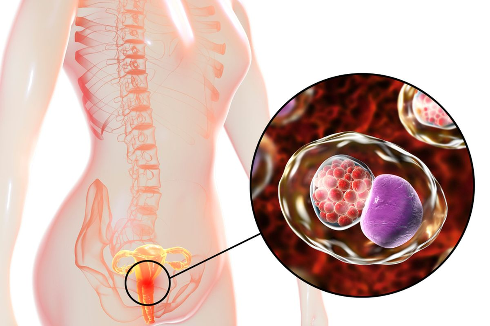

Apa itu Klamidia?
Klamidia adalah infeksi menular seksual (IMS) yang disebabkan oleh bakteri
Chlamydia trachomatis. Ini adalah salah satu IMS yang paling sering
dilaporkan di dunia dan dapat menyerang pria maupun wanita, terutama yang aktif
secara seksual.
Infeksi ini dapat menyerang leher rahim, uretra, rektum, tenggorokan, dan mata.
Banyak penderita tidak mengalami gejala, sehingga infeksi sering tidak terdeteksi dan
menular tanpa disadari.
Penyebab Klamidia
- Hubungan seks vaginal, anal, atau oral tanpa kondom
- Kontak langsung dengan cairan kelamin yang terinfeksi
- Penularan dari ibu ke bayi saat persalinan
Gejala Klamidia
Banyak orang tidak menunjukkan gejala. Namun, jika muncul, gejalanya dapat meliputi:
Gejala pada Wanita:
- Keputihan tidak normal
- Rasa terbakar saat buang air kecil
- Sakit perut bagian bawah
- Nyeri saat berhubungan seksual
- Pendarahan setelah hubungan seksual atau di luar menstruasi
Gejala pada Pria:
- Keluarnya cairan dari penis
- Rasa nyeri atau terbakar saat buang air kecil
- Nyeri atau bengkak di testis
Gejala pada Rektum dan Tenggorokan:
- Sakit atau keluarnya cairan dari anus
- Sakit tenggorokan yang persisten
Komplikasi
Jika tidak diobati, klamidia dapat menyebabkan komplikasi serius seperti:
- Pada Wanita: Penyakit radang panggul (PID), infertilitas
- Pada Pria: Epididimitis, infertilitas
- Infeksi mata dan paru-paru pada bayi yang tertular saat lahir
- Peningkatan risiko infeksi HIV
Pencegahan Klamidia
- Gunakan kondom saat berhubungan seks
- Lakukan tes IMS secara rutin
- Setia pada satu pasangan yang tidak terinfeksi
- Hindari berbagi mainan seks atau bersihkan dengan benar
- Komunikasi terbuka dengan pasangan mengenai riwayat seksual
Pengobatan
Klamidia dapat disembuhkan dengan antibiotik yang diresepkan oleh dokter. Biasanya
diberikan:
- Azithromycin (dosis tunggal) atau Doxycycline (7 hari)
- Obat untuk pasangan juga harus diberikan untuk mencegah infeksi ulang
- Hindari hubungan seks selama pengobatan hingga dinyatakan sembuh
⚠️ Penting untuk Diingat!
Klamidia bisa tidak bergejala tetapi tetap menular. Lakukan pemeriksaan secara
rutin terutama jika Anda aktif secara seksual. Pengobatan dini sangat penting untuk
mencegah komplikasi jangka panjang.
Jangan menunda pemeriksaan! Segera konsultasi ke fasilitas
kesehatan jika merasa berisiko.